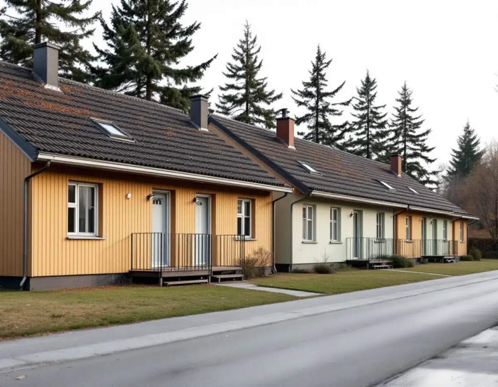
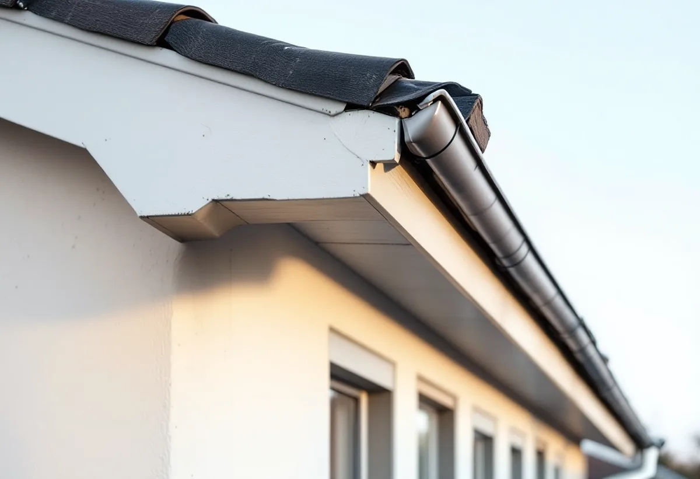
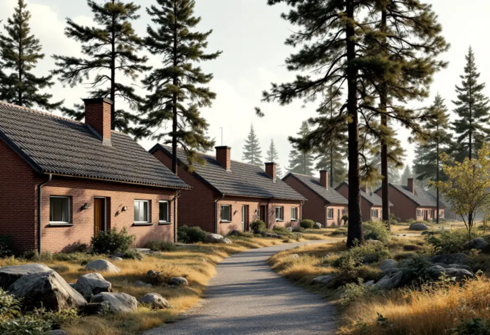

Klassning
Vi tittar på riksintresset, Stadsmuseets karta och detaljplanen.
Vällingby byggdes på 1950-talet som Sveriges första ABC-stad, med höga hus närmast centrum och radhus och småhus längst ut. Hela Vällingby–Råcksta är riksintresse för kulturmiljövården, och staden nämner de ursprungliga husens gestaltning och detaljer bland det som är värdebärande. En takrenovering i Vällingby görs därför så att taket ser ut som förut när det är klart.

Vällingby–Råcksta planerades som en självförsörjande förort med arbete, bostäder och centrum. Ingen skulle ha längre än 900 meter till tunnelbanan. Kring centrum byggdes höga punkthus, sedan lägre flerbostadshus, och längst ut områden med radhus och småhus.
Stadens statistik för 2024 visar 449 småhus i stadsdelen Vällingby. 228 är bostadsrätter och 220 ägs med äganderätt – alltså ungefär hälften var. Vem som beställer en takrenovering beror därför på vilken sorts hus du bor i.

Råcksta planerades samtidigt som Vällingby, och de första bostäderna var klara 1952. Stadsmuseet beskriver husen som mycket välplanerade, ofta grupperade kring skyddade innergårdar och med mycket sparad natur.
Särskilt uppmärksammade är radhusen vid Långseleringen och Ramselegatan, ritade av arkitekten Adrian Langendal och klara 1953. De är kända för sin livfulla färgsättning och omväxlande detaljer, som de dekorativa räckena vid de franska fönstren. På hus med så tydlig gestaltning är takfot, vindskivor och plåtdetaljer en del av helheten, och de ska få tillbaka samma form och kulör efter en omläggning.
Staden räknar Grimsta som kulturhistoriskt värdefull miljö, och Råcksta både som riksintresse och värdefull miljö. I Vällingby finns också radhusområdena Atlantis och Omega, som stadens vägledning kallar kulturhistoriskt synnerligen värdefulla.
I stadens beskrivning av riksintresset har Vällingby–Råcksta bebyggelse i tydligt definierade grupper med enhetlig karaktär. Ett tak som får ett annat material eller en annan kulör än grannarnas syns därför tydligt.
I stadens beskrivning av riksintresset nämns de ursprungliga husens gestaltning och byggnadsdetaljer som värdebärande, liksom bebyggelsens indelning i tydliga grupper med enhetlig karaktär. Riksintresset i sig ger inga detaljerade regler för ditt tak, men det påverkar hur staden bedömer en bygglovsansökan.
Lägger du om taket med samma material krävs inget lov. Vill du byta material eller kulör ska du först titta på Stadsmuseets klassificeringskarta och detaljplanen: är huset eller området särskilt kulturhistoriskt värdefullt gäller utökad lovplikt.
Bor du i ett radhus som är bostadsrätt avgör stadgarna vem som ansvarar för taket. Är det föreningen beställer styrelsen, och då görs ofta en hel länga eller ett helt område i taget.
Äger du huset själv beställer du, men taket hänger ofta ihop med grannarnas. Vi löser skarvarna mot grannhusen och visar hur de är gjorda, så att nästa granne som renoverar kan ansluta på samma sätt. Läs mer om takbesiktning innan du bestämmer dig.
När Råcksta byggdes strävade man efter att spara så mycket naturmark som möjligt. Stadsmuseet beskriver berg i dagen och kraftfulla stora träd mellan husen. Det är vackert, men det betyder också skugga, barr och löv på taken.
På skuggiga takfall får mossan lättare fäste, och den binder fukt mot pannorna. Barr och löv samlas i rännor och ränndalar. Vid en takrenovering rensar vi därför rännorna och föreslår vid behov behandling mot mossa, så att det nya underlaget inte får stå i fukt.
Rensade rännor och fria stuprör gör också att vattnet leds bort från husets grund och inte rinner längs fasaden. Vi kontrollerar att stuprören är hela och att de leder vattnet dit det ska, och visar dig var rännorna behöver rensas framöver.

Vi tittar på riksintresset, Stadsmuseets karta och detaljplanen.
Pannor, papp, läkt och plåtdetaljer kontrolleras.
Takfot, vindskivor och kulörer mäts och fotograferas.
Vi klarar ut om föreningen eller du beställer.
Nytt underlag och samma täckning som husgruppen.
Plåt och vindskivor i samma form och kulör som förut.
Skatteverket räknar reparation och byte av takpannor, underlagspapp och hängrännor på ett småhus som rotarbete när du äger huset och bor i det eller har det som fritidshus. Avdraget är 30 procent av arbetskostnaden, högst 50 000 kronor per person och år och högst 75 000 kronor tillsammans med rutavdrag. Material och resor ger inget avdrag, enligt Skatteverket.
Geal drar avdraget direkt på fakturan. Är ni flera ägare har var och en sitt eget tak för avdraget. Är radhuset en bostadsrätt och taket föreningens ansvar ger arbetet inget rotavdrag för dig som medlem. Läs mer under rotavdrag för takarbete.
Kostnaden i Vällingby påverkas av takets yta och form, om flera hus i längan görs samtidigt, hur mycket underlag som behöver bytas och hur många plåt- och snickeridetaljer som ska återskapas. Läs mer om vad en takrenovering kostar.
Takbyte, besiktning och plåtarbeten.
Takläggare i Vällingby →Så fungerar en omläggning.
Takrenovering och takomläggning →Det här styr priset.
Vad kostar en takrenovering? →Räkna på takytan och ROT.
Takbyte-kalkylator →Villastaden, Hässelby strand och gård.
Takrenovering i Hässelby →Solhem, Bromsten, Flysta och Sundby.
Takrenovering i Spånga →Trädgårdsstäder, tegel och funkistak.
Takrenovering i Bromma →